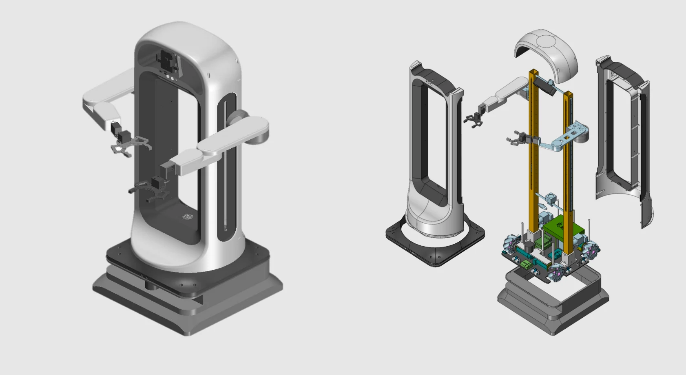
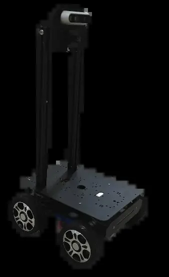
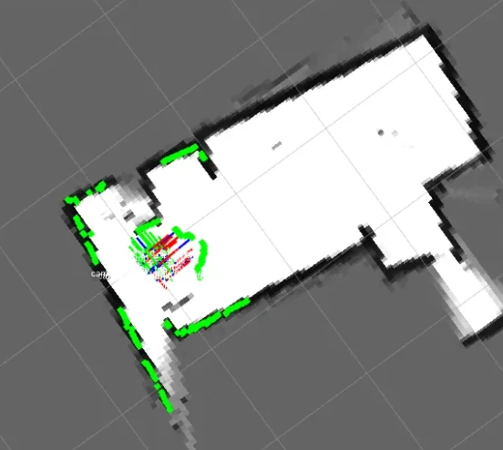
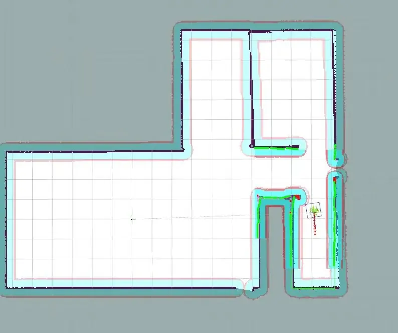
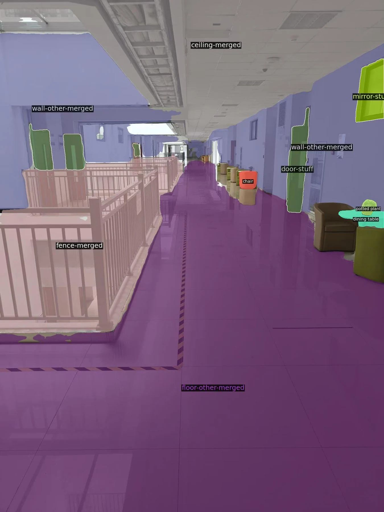
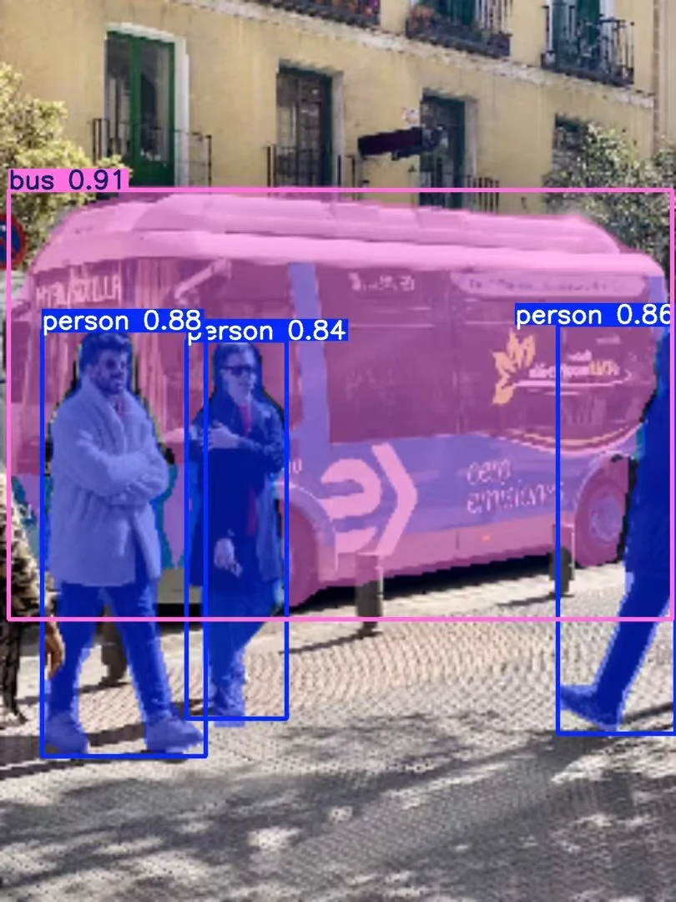

多传感器导航Multi-sensor navigation · 2022.05—2023.03May 2022–Mar 2023
基于半人型机器人的激光雷达与视觉融合导航操作系统LiDAR–vision navigation and manipulation with a semi-humanoid robot
面向半人型机器人的室内定位与作业位置到达，融合二维激光雷达、视觉点云和 SLAM；实机展示走廊导航、障碍场景通行与接近工作台。For indoor localization and access to work poses, a semi-humanoid platform combines 2D LiDAR, visual point clouds, and SLAM; real demonstrations cover corridor navigation, obstacles, and approaching a workbench.
- 项目时间Period
- 2022.05—2023.03May 2022–Mar 2023
- 本人职责Role
- 核心开发者Core developer
项目背景Background
二维激光雷达只观测一个高度平面，难以覆盖室内不同高度的障碍。项目引入相机信息，并把融合感知与移动操作平台的导航需求连接起来。A 2D LiDAR observes a single plane and can miss obstacles at other heights. Camera information extends perception for a mobile manipulation platform.
任务说明Task
在复杂室内环境中完成定位、避障和目标位置到达，为后续机械臂作业提供可执行的底盘位置。Localize, avoid obstacles, and reach target locations indoors to provide suitable base poses for manipulation.
设备说明Robot hardware
平台采用带升降结构的移动操作机器人，采用二维激光雷达、相机和底盘控制系统。激光和视觉观测共同构建导航所需的几何信息。The slides show a mobile manipulation platform with a lift, 2D LiDAR, camera, and base controller. Laser and camera observations jointly support navigation geometry.


系统和关键技术System and key technologies
相机点云经过滤波和投影，与二维激光扫描融合后进入 Cartographer 建图和代价地图。后续探索加入深度估计与语义网络，为不同类别物体设置导航代价。Filtered and projected camera point clouds are fused with 2D laser scans for Cartographer mapping and costmaps. Follow-up work explores depth and semantic networks to assign category-dependent navigation costs.




演示与结果Demonstrations and results
实机视频补充走廊行驶、实验室绕障与接近工作台等不同场景，地图与感知图用于说明导航输入及规划过程。Real-robot clips cover corridor travel, laboratory obstacle avoidance, and approach to a workbench. Maps and perception images explain the navigation inputs and planning.